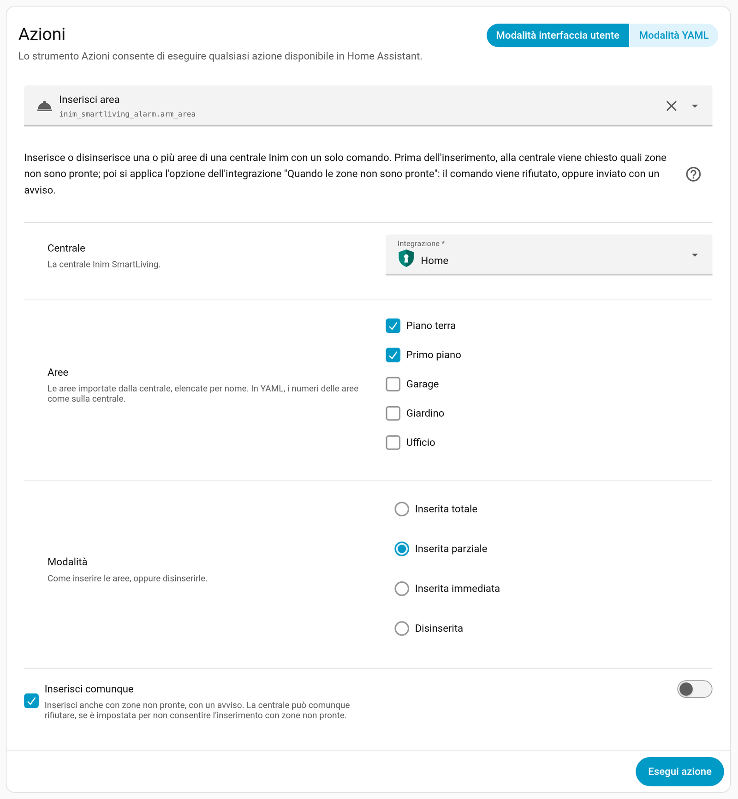
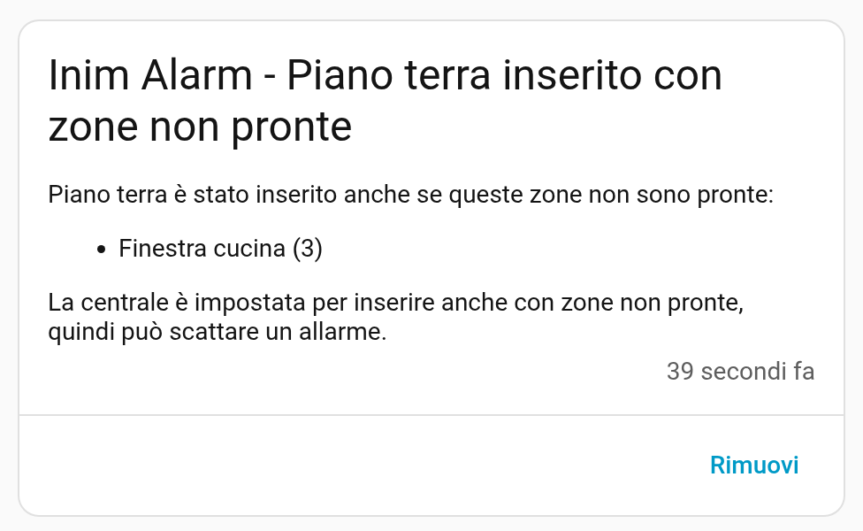

Azioni ed eventi¶
Questa pagina spiega come inserire, disinserire e attivare scenari da plance e automazioni, e come le automazioni possono reagire agli eventi dell'integrazione. Il riferimento alla fine elenca ogni campo.
Da una plancia¶
- L'intera centrale: aggiungi l'entità del pannello di allarme alla scheda Pannello degli Allarmi di Home Assistant. I suoi pulsanti attivano gli scenari che hai associato nelle opzioni.
-
Un'area: aggiungi l'interruttore dell'area (acceso inserisce, spento disinserisce) o il suo selettore della modalità di inserimento (scegli la modalità). Una scheda riquadro con la funzione delle opzioni del selettore mostra le modalità come elenco:


-
Uno scenario: aggiungi il suo pulsante.
- Un'uscita: aggiungi il suo interruttore o la sua luce (vedi Uscite).
Inserire aree dalle automazioni¶
Usa l'azione Inserisci area per inserire o disinserire una o più aree di una centrale con un solo comando, così cambiano insieme. Nell'editor delle automazioni, aggiungi l'azione Inserisci area, scegli la centrale, seleziona le aree e scegli la modalità:

In YAML, areas sono i numeri delle aree come sulla centrale:
action: inim_smartliving_alarm.arm_area
data:
config_entry_id: your_config_entry_id
areas: [1, 3]
mode: partial
Per attivare uno scenario da un'automazione, usa Attiva scenario (vedi più avanti). Puoi provare qualsiasi azione da Impostazioni → Strumenti → Azioni (nelle versioni precedenti alla 2026.11, Strumenti per sviluppatori → Azioni).
Reset delle memorie allarmi¶
Dopo un allarme, la centrale conserva la memoria allarmi delle aree coinvolte finché non se ne fa il reset; i sensori Area N memoria allarmi la mostrano. L'azione Reset allarme fa il reset di ogni area della centrale che ha memorie allarmi o manomissioni:
action: inim_smartliving_alarm.alarm_reset
target:
entity_id: alarm_control_panel.your_panel_name
Puoi avviarla da uno script, da un'automazione o da un pulsante in una plancia.
Zone non pronte¶
Prima di inserire un'area o attivare uno scenario, l'integrazione chiede alla centrale quali zone non sono pronte per l'inserimento. Tramite l'opzione Quando le zone non sono pronte (in Impostazioni generali) puoi decidere come si deve comportare l'integrazione:
- Rifiuta (l'impostazione predefinita): non viene inviato nulla. Ricevi un errore che elenca le zone, per esempio "Area 3 non è stato inserito perché queste zone non sono pronte: Finestra cucina (12)".
-
Inserisci comunque e avvisa: il comando viene inviato e una notifica elenca le zone. Possono far scattare un allarme se non vengono chiuse o escluse in tempo.

force: true nelle azioni Inserisci area e Attiva scenario inserisce comunque per quella chiamata, ignorando l'opzione precedente. Il disinserimento non viene mai controllato. In ogni caso, viene generato l'evento inim_smartliving_alarm_zones_not_ready, per esempio per annunciare le zone aperte.
Quali comandi vengono controllati, e la regola della centrale
- Controllati: l'interruttore dell'area, il selettore della modalità di inserimento e Inserisci area (inserimento di un'area), e il pulsante dello scenario, il pannello di allarme e Attiva scenario (attivazione di uno scenario).
- Le zone che la centrale esclude da sola all'inserimento (zone ad autoesclusione) non vengono elencate.
- L'installatore può anche impostare la centrale stessa per non consentire l'inserimento con zone non pronte. L'integrazione legge questa impostazione con la configurazione della centrale e la mostra nel sensore Rifiuta l'inserimento con zone non pronte (e come
panel_refuses_not_readynell'evento). Quando è attiva, la centrale rifiuta un comando del genere anche quando inserisci comunque o usiforce: l'integrazione lo invia lo stesso, il messaggio dice che la centrale l'ha rifiutato, e l'actiondell'evento èrefused_by_panel. Questa impostazione sulla centrale non può essere bypassata dall'integrazione. - La regola della centrale dipende dalla programmazione di ogni zona (per esempio, le zone ritardate non bloccano l'inserimento totale, e le zone con
no_arming_if_not_readybloccano ogni modalità), quindi può lasciar passare zone che l'integrazione elenca. Quando l'impostazione è disattivata, la centrale inserisce qualunque cosa dica la programmazione delle zone.
Il registro eventi in una plancia¶
Una scheda Markdown mostra gli ultimi eventi del sensore del registro eventi. Sostituisci sensor.home_event_log con l'ID del tuo sensore del registro eventi:
type: markdown
title: Eventi allarme
content: >-
{% for e in (state_attr('sensor.home_event_log', 'event_log') or [])[:10] %}
- {{ as_timestamp(e.timestamp) | timestamp_custom('%d/%m %H:%M') }}
· {{ e.description_local }}{% if e.authorized_by %} · {{ e.authorized_by }}{% endif %}{% if e.affected_areas and e.affected_areas != 'None' %} · {{ e.affected_areas }}{% endif %}
{% endfor %}
La cartella Examples del repository contiene una plancia più grande, fatta per la versione 0.3: i suoi ID delle entità e alcune schede possono richiedere modifiche.
Azioni¶
Nessuna delle azioni restituisce una risposta. Se un comando non viene eseguito, l'azione non riesce, con un messaggio che dice perché (vedi Quando la centrale rifiuta un comando).
Inserisci area¶
inim_smartliving_alarm.arm_area: inserisce o disinserisce una o più aree di una centrale con un solo comando. Prima dell'inserimento, controlla le zone (vedi Zone non pronte).
| Campo | Obbligatorio | Tipo e valori | Predefinito | Esempio |
|---|---|---|---|---|
config_entry_id |
sì | la centrale (un elenco delle tue centrali nell'editor) | – | 01J… |
areas |
sì | un elenco di numeri di area, come sulla centrale; l'editor elenca le aree importate per nome | – | [1, 3] |
mode |
sì | total, partial, instant, disarm |
– | partial |
force |
no | true inserisce anche se ci sono zone non pronte |
false |
true |
Quando non riesce
- Con più centrali, l'editor mostra ogni numero di area con il nome che ha su ogni centrale che la importa; la centrale che scegli decide quale viene inserita.
- Un'area che non è importata da quella centrale (per esempio, una che hai deselezionato dopo aver scritto l'automazione) viene rifiutata con un messaggio, e non viene inviato nulla.
- Non riesce anche quando la centrale non viene trovata o non è caricata, quando ci sono zone non pronte e l'opzione dice Rifiuta, e quando la centrale rifiuta il comando.
Attiva scenario¶
inim_smartliving_alarm.activate_scenario: attiva uno scenario della centrale. Prima di attivarlo, controlla le zone (vedi Zone non pronte).
| Campo | Obbligatorio | Tipo e valori | Predefinito | Esempio |
|---|---|---|---|---|
config_entry_id |
sì | la centrale | – | 01J… |
scenario |
sì | il numero dello scenario, come sulla centrale (da 1); l'editor elenca gli scenari importati per nome | – | 2 |
force |
no | true lo attiva anche se ci sono zone non pronte |
false |
true |
action: inim_smartliving_alarm.activate_scenario
data:
config_entry_id: your_config_entry_id
scenario: 2
Uno scenario che non è importato da quella centrale viene rifiutato con un messaggio. Un'attivazione non riuscita mostra anche una notifica e genera l'evento inim_smartliving_alarm_scenario_activation_failed.
Reset allarme¶
inim_smartliving_alarm.alarm_reset: fa il reset delle memorie allarmi e manomissioni di ogni area della centrale che ne ha.
| Campo | Obbligatorio | Tipo e valori | Predefinito | Esempio |
|---|---|---|---|---|
target entity_id |
sì | l'entità del pannello di allarme della centrale | – | alarm_control_panel.home |
Le entità di altre integrazioni nel target vengono ignorate. Se l'integrazione della centrale non è caricata, l'azione non riesce, con un messaggio.
Rileggi la configurazione della centrale¶
inim_smartliving_alarm.reread_panel_configuration: rilegge la configurazione della centrale e ricarica l'integrazione, come il pulsante con lo stesso nome (vedi Configurazione).
| Campo | Obbligatorio | Tipo e valori | Predefinito | Esempio |
|---|---|---|---|---|
config_entry_id |
sì | la centrale | – | 01J… |
action: inim_smartliving_alarm.reread_panel_configuration
data:
config_entry_id: your_config_entry_id
Non riesce, e mantiene la configurazione salvata, quando la centrale non è raggiungibile, è in programmazione o restituisce una configurazione incompleta.
Eventi¶
Le automazioni possono reagire a questi eventi con un attivatore di tipo evento.
Zone non pronte¶
inim_smartliving_alarm_zones_not_ready viene generato ogni volta che un'area viene inserita o uno scenario viene attivato con zone non pronte, sia che il comando sia stato rifiutato, sia che sia stato inviato comunque.
| Campo | Valori |
|---|---|
config_entry_id |
la voce di configurazione della centrale |
target |
il nome dell'area, più nomi di aree separati da virgole (da Inserisci area), o il nome dello scenario |
action |
refused (non inviato), armed_anyway (inviato con un avviso), refused_by_panel (inviato, e la centrale l'ha rifiutato) |
zones |
le zone non pronte, ognuna con zone_id (il numero) e zone_name (il nome della zona sulla centrale, per esempio Finestra cucina, oppure Zone 12 quando non ne ha uno) |
panel_refuses_not_ready |
true o false: se la centrale stessa rifiuta l'inserimento con zone non pronte; null prima che la configurazione sia stata riletta da questa versione |
triggers:
- trigger: event
event_type: inim_smartliving_alarm_zones_not_ready
Attivazione dello scenario non riuscita¶
inim_smartliving_alarm_scenario_activation_failed viene generato ogni volta che uno scenario non si può attivare: dal pannello di allarme, da un pulsante di scenario o da Attiva scenario. Uno scenario rifiutato perché ci sono zone non pronte genera entrambi gli eventi.
| Campo | Valori |
|---|---|
entity_unique_id |
l'ID univoco dell'entità che l'ha attivato, oppure <entry id>_activate_scenario_action per l'azione Attiva scenario |
entity_name |
il nome di quell'entità, oppure il titolo della voce della centrale per l'azione |
action |
cosa è stato chiesto, in inglese, per esempio arm away, activate scenario 'Night' (l'azione) o activate scenario 'Night' (index 1) (un pulsante di scenario) |
scenario_index |
il numero dello scenario meno 1 |
scenario_name |
il nome dello scenario |
reason |
zones_blocked, no_areas_identified, unknown_zones_error, no_data_available, disarm_failed, panel_programming, command_failed, unknown, oppure il motivo dato dalla centrale (vedi sotto), tranne open_zones e refused, che danno zones_blocked o unknown_zones_error |
panel_result |
il motivo della centrale quando ha rifiutato il comando (compresi open_zones e refused), unknown per un motivo che l'integrazione non conosce, oppure null quando la centrale non l'ha rifiutato |
blocking_zones |
le zone che l'hanno bloccato, ognuna con zone_id, zone_name, status (not_ready, alarmed, short o tamper) e areas (per nome) |
message |
una descrizione, sempre in inglese, qualunque sia la lingua di Home Assistant |
I motivi della centrale sono invalid_code, open_zones, code_not_enabled, already_in_state, slot_out_of_range, slot_not_connected, null_terminal, cannot_be_bypassed, no_areas, double_zone_error, output_not_enabled, areas_armed e refused; cosa significa ognuno è in Risoluzione dei problemi.
Comandare le uscite¶
Vedi Uscite.